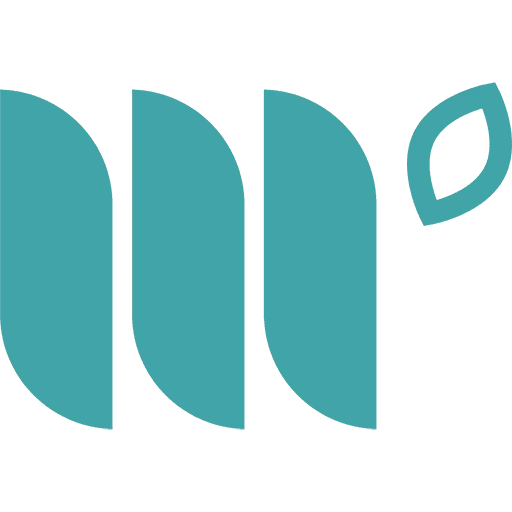
2022 – 2026Director of User Experience
Mediavine · www.mediavine.comI currently manage the User Experience team at Mediavine which consists of three senior product designers that work across our product suite. I work alongside Product teams to help guide feature direction, create high-quality user experiences, and ensure accessibility standards are met company-wide.
Most recently, I led the complete redesign of our user-facing dashboard that incorporated user feedback, integrated new reporting for our users, and improved usability across both mobile and desktop experiences.
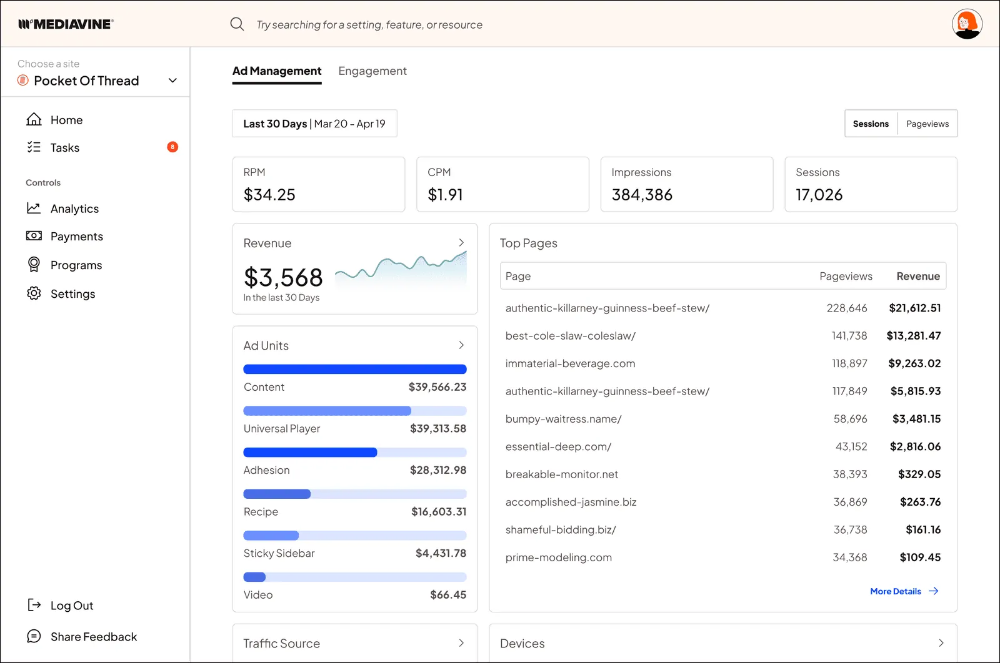
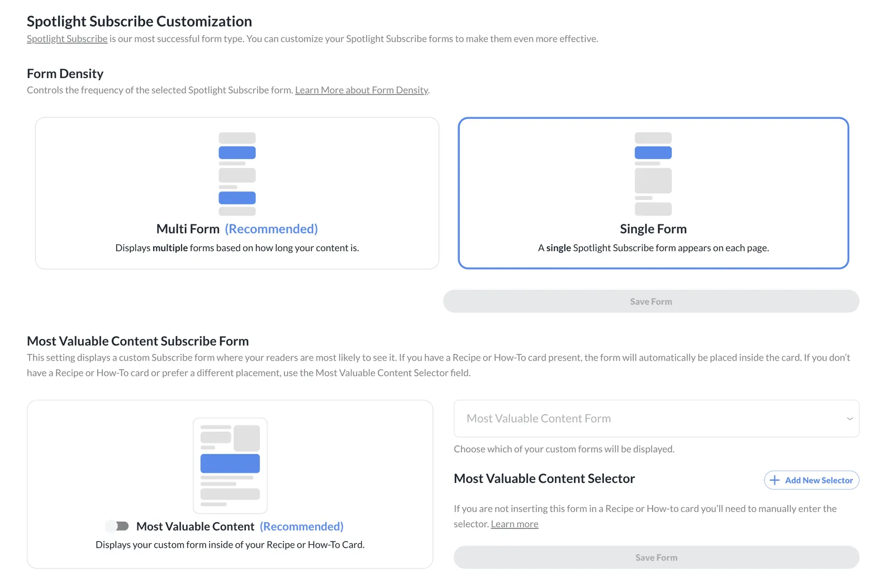
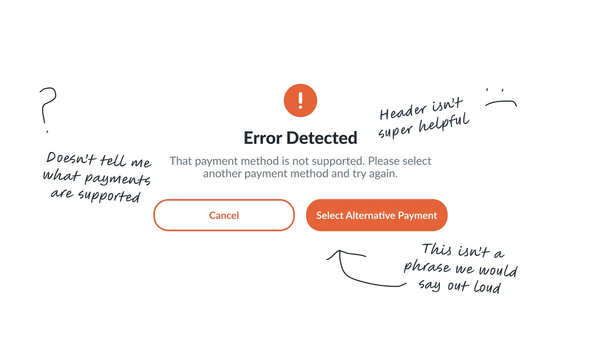
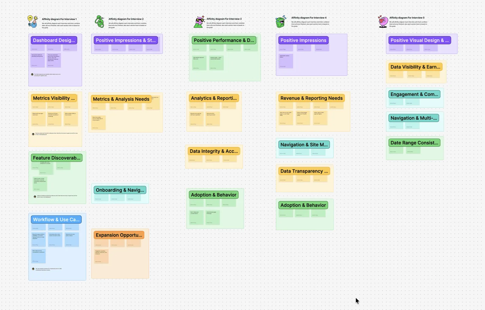
Director of UX and Brand
Fluree · www.flur.eeAt Fluree, I oversaw all UI design across both internal projects and external, client applications. I also led the company through a rebrand in 2021 where I designed a new logo, iconography, the yeti mascot, and many other marketing collateral. I also served as the lead designer on their consumer-facing web app, Fluree Nexus.
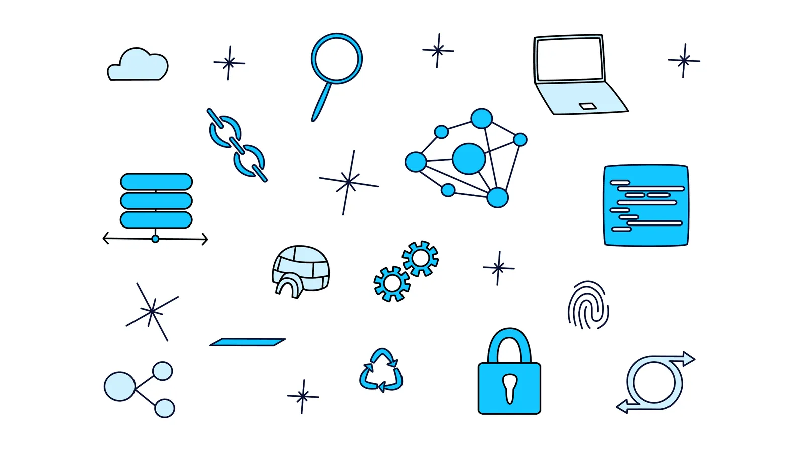
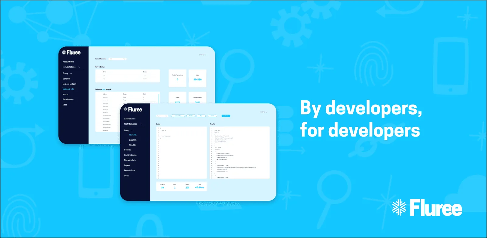
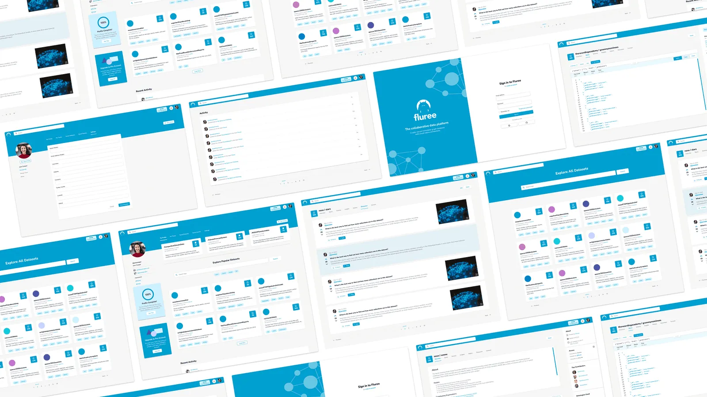
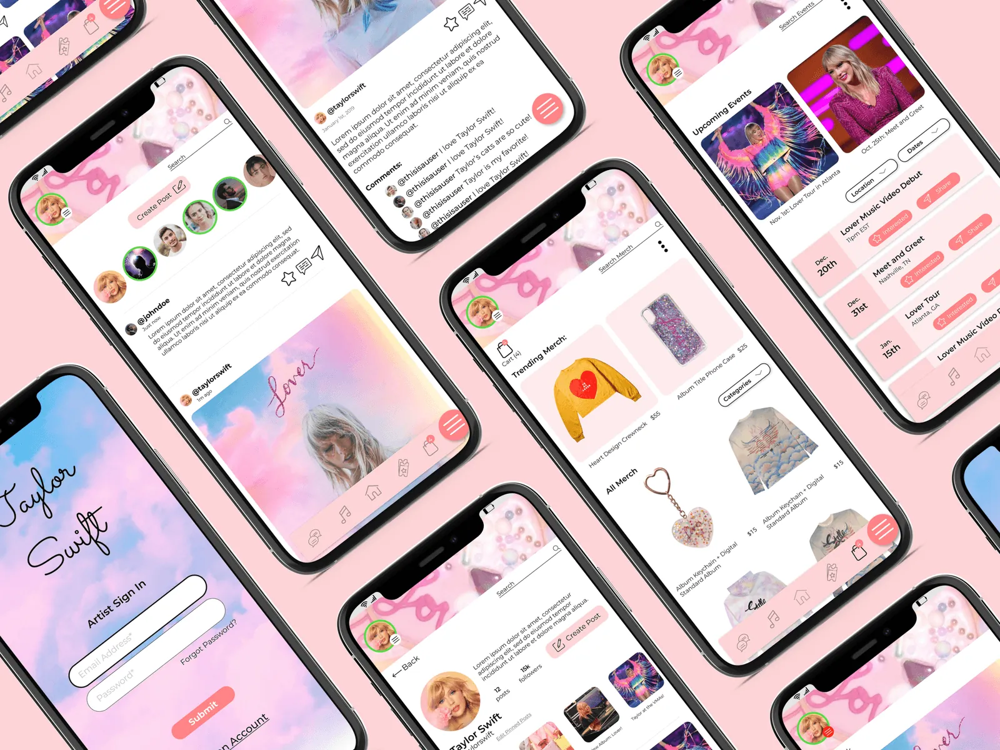
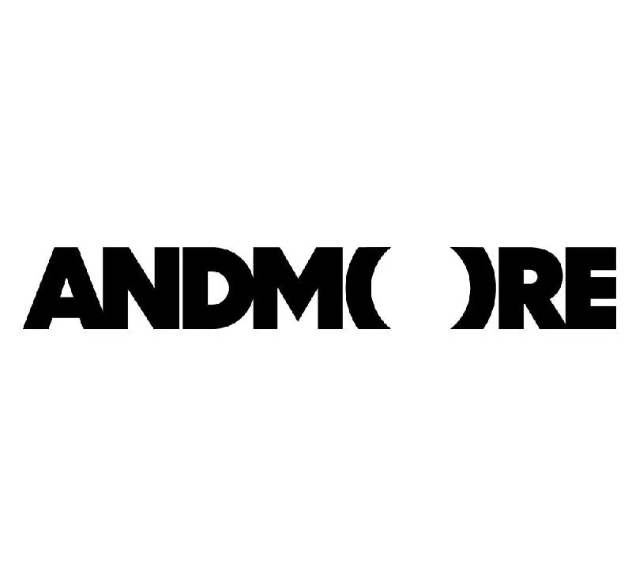
2018 – 2019Digital Content Manager
Andmore · www.andmore.comAt Andmore (formerly International Market Centers), I was responsible for designing and building web pages in Hippo, ModEx, and Wordpress CMSs. I also worked with Marketing teams to develop cohesive seasonal content strategies based on Market cycles. Additionally, I helped the Digital team build out its e-commerce platform and accompanying training materials for vendors.
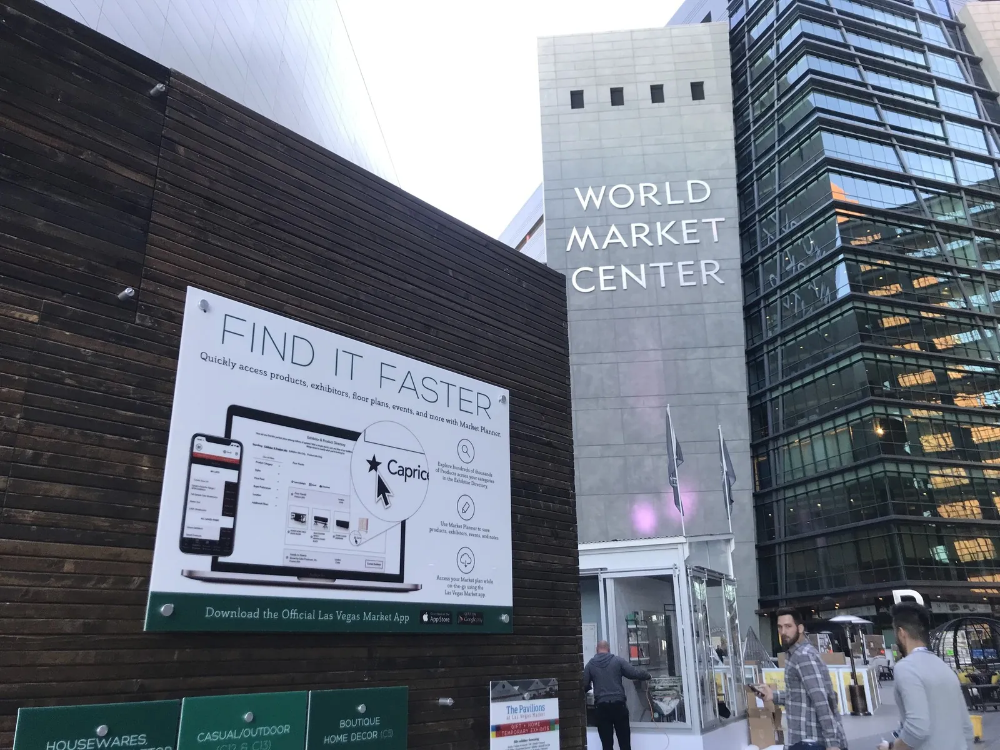
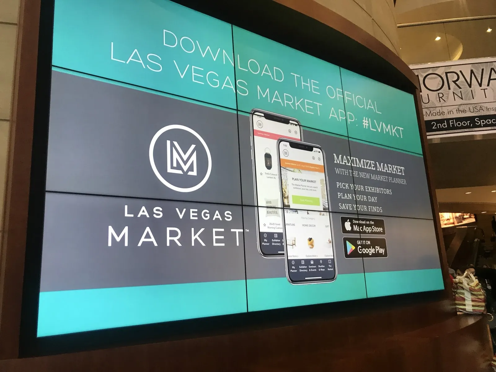
Digital Content Strategist
Elon University · www.elon.eduIn this role, I directly managed a team of three in UX, social media content, and marketing for the Technology Department. I also led the migration of 20+ university websites from one CMS to another while also giving each one a design refresh as the department’s UX lead.
Additionally, I designed many print and web graphics for the department, and worked alongside staff and faculty to create their custom websites and marketing materials.
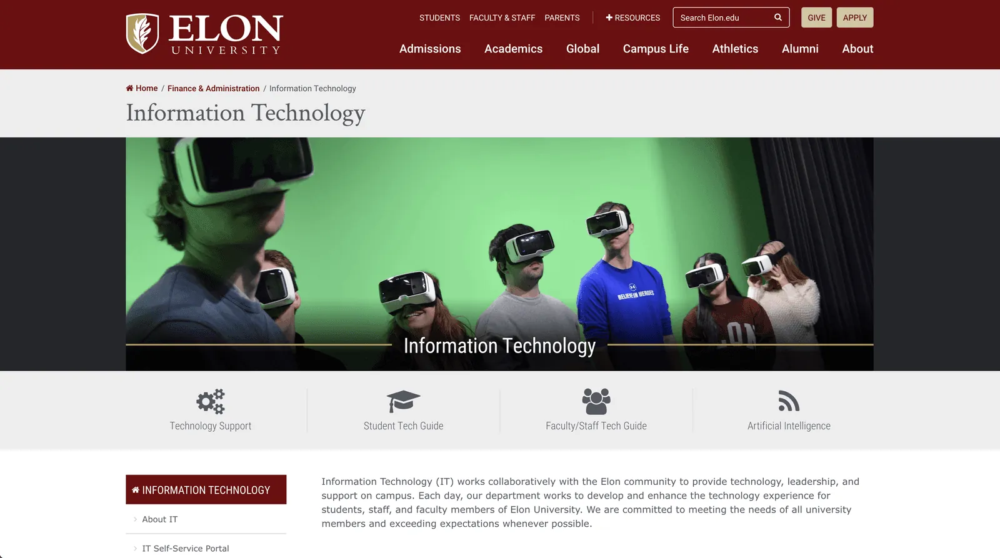
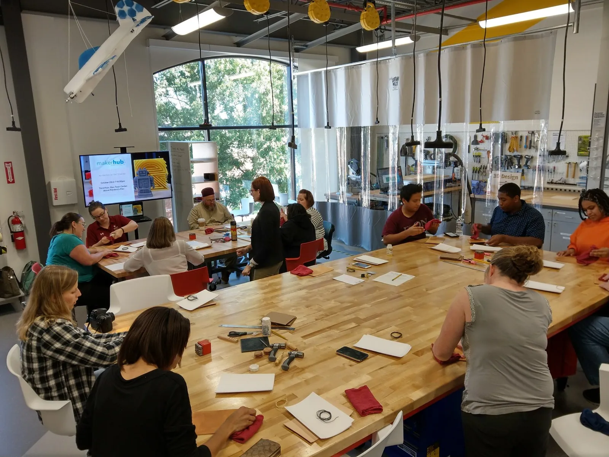
Talks and workshops on design, psychology and UX writing.
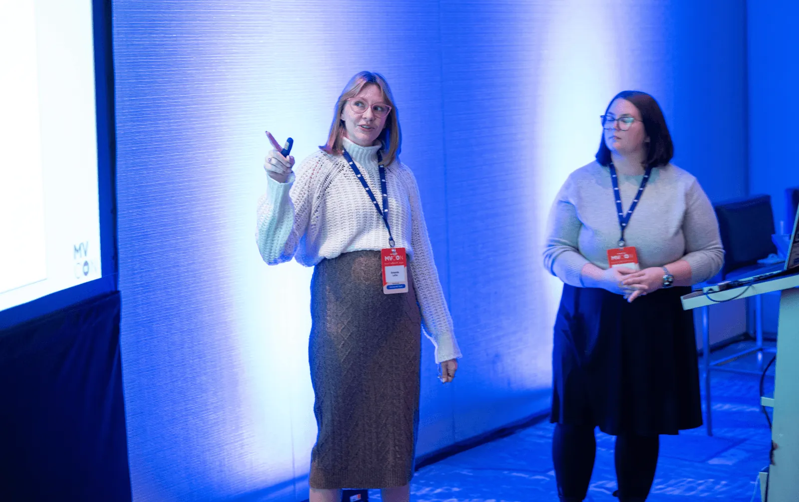
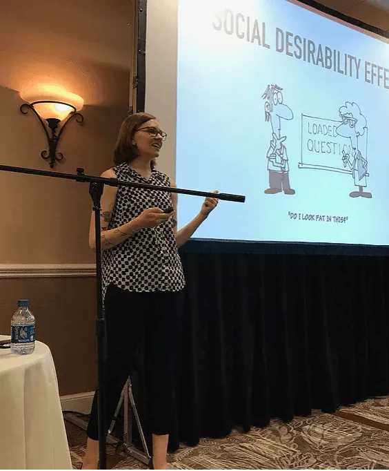
“Turn Insights into Impact with the New Mediavine Dashboard”
I presented at MVCon and led an interactive feedback session with our core users to get feedback on our newly-launched dashboard.
“Font Feelings”
A presentation on how the appearance of words transforms what you feel, think, taste, and do. Based on the research of Sarah Hyndman.
Mediavine ’25“Understanding Gestalt Principles of Visual Perception”
In this presentation, I go over the basics of gestalt design principles as well as the top five that apply most to UX design. At the end, you’ll find an exercise you can try with your team to see if you can identify gestalt principles in the wild.
Mediavine ’25“How to Write Effective Micro Copy”
In this interactive presentation, you’ll learn actionable takeaways you can apply to improve microcopy on the web. Whether you’re a designer dabbling in UI writing or a marketer looking to improve conversions, this crash course will help you write better microcopy!
Revolution Conf, Music City Tech, Connect.Tech, Joyner Paraprofessional Conference, Triad.JS, Certified Fresh Events, and Flatiron School
Designing Interconnected Web Experiences
I have experience working with product suites and creating cohesive web experiences for a variety of user personas.
Design Thinking
I enjoy leading design thinking exercises to map out user flows, improve product processes, and kickstart experimentation.
Creating Scaleable Design Processes
Through component-based design and well-defined process, I help ensure that designs are reusable, flexible, and make workflows more efficient.
Effective Communication
Getting buy-in from stakeholders isn’t always easy. I balance business needs with user data when communicating design decisions to all levels of stakeholders.